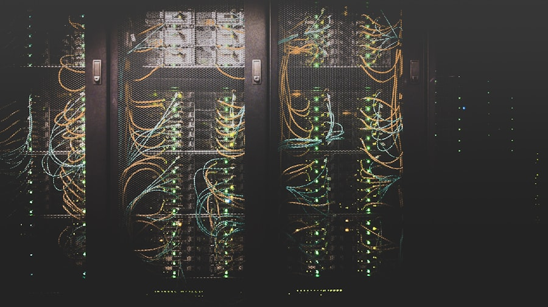

Ağ trafiğinizi milisaniye hassasiyetinde izler, anormal davranışları saldırı gerçekleşmeden önce tespit ederiz.
Tehdit tespit edildiği an otomatik izolasyon protokolleri devreye girer; hasar oluşmadan durdurulur.
İzleme, müdahale ve raporlama — Obsidian Security'nin her müşteride kurduğu üç aşamalı savunma hattı. Tehdit avcılığı, SIEM korelasyonu ve olay müdahalesi tek platformda birleşir.

Dark web, OSINT ve sektörel IOC akışlarıyla saldırı kampanyalarını hedef almadan önce haritalarız. STIX/TAXII entegrasyonu desteklenir.
MITRE ATT&CK çerçevesinde olay sınıflandırma, kanıt toplama ve kontrollü izolasyon. Forensik raporlama 72 saat içinde teslim edilir.
KVKK, ISO 27001 ve sektörel regülasyonlara uyum için sürekli log arşivleme, erişim denetimi ve periyodik penetrasyon testi raporları.
Referans metrikler tanıtım amaçlıdır. Gerçek SLA ve kapsam, sektör ve altyapı büyüklüğüne göre özelleştirilir.
Güvenlik ekibimizle ücretsiz bir risk değerlendirme görüşmesi planlayın. İlk tarama raporu 48 saat içinde.
Görüşme Planla